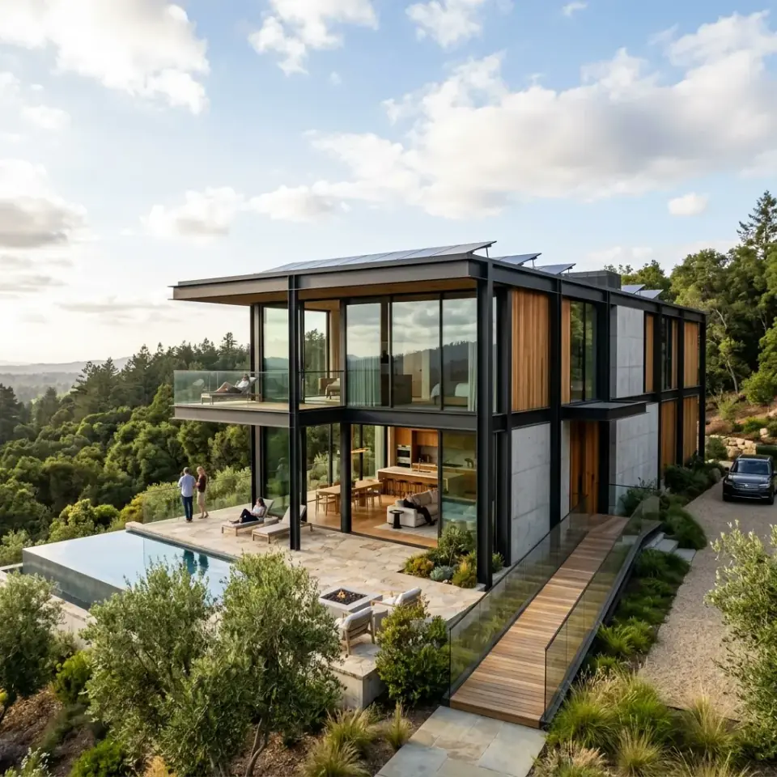

Capas del muro y tabique Steel Framing
Inspecciona al milímetro la anatomía multicapa de una pared exterior portante. Descubre la interacción física entre los perfiles de acero galvanizado, la aislación termoacústica y el sistema EIFS continuo bajo normas IRAM y CIRSOC 303.
Resumen Técnico de Ingeniería: El paquete constructivo exterior de Steel Framing se compone de 8 capas sinérgicas: placa de yeso interior, barrera de vapor, perfiles PGC 100 de acero galvanizado con lana de vidrio, placa rigidizadora OSB de 11.1 mm, membrana hidrófuga respirable, EPS de 50 mm (EIFS) y revestimiento elastomérico, logrando una transmitancia térmica K inferior a 0.38 W/m²K.
Corte Escalonado en Tiempo Real
Girá con el mouse o dedo, hacé zoom e interactuá con cada componente para explorar la física y el ensamble constructivo normalizado del muro exterior.
Placa de Roca de Yeso (Durlock 12.5 mm)
Superficie interior lisa y apta para pintura látex o papel
architecture Función en el Paquete Constructivo:
Constituye el cierre interior del muro, aportando una superficie lisa lista para pintura látex o papel. Su núcleo de yeso bihidratado confiere una excelente resistencia pasiva al fuego (clasificación RE2 de muy baja propagación de llama) y aporta masa para el confort acústico de las habitaciones.
wb_sunny Relevancia para el Clima de Tucumán:
En combinación con la barrera de vapor, evita que el aire húmedo y cálido de las habitaciones sature los perfiles estructurales durante los húmedos veranos del norte argentino, manteniendo ambientes secos y sin moho.
engineering Especificación de Montaje y Fijación:
Fijada directamente a los montantes PGC mediante tornillos autorroscantes tipo T2 (punta aguja) cabeza trompeta fosfatizados cada 25 a 30 cm en el centro y cada 15 cm en los bordes. Juntas tomadas con cinta de papel microperforada y masilla de secado rápido.
Transmitancia Térmica Global (K)
El tabique de Steel Framing aisla casi 6 veces más que una pared de ladrillo con revoque común, ahorrando hasta un 65% en climatización en Tucumán.
Anatomía del Paquete Constructivo Exterior
Cada componente cumple un rol físico indispensable en el equilibrio higrotérmico y estructural de la vivienda. Orden riguroso de colocación de adentro hacia afuera:
Placa de Yeso (12.5 mm)
Constituye la cara visible interior. Otorga planeidad absoluta sin revoques húmedos, aislamiento acústico y resistencia al fuego certificada por normas IRAM 11.643.
Barrera de Vapor (200 μm)
Film de polietileno continuo sellado con cinta hermética. Frena la migración del vapor interior evitando la condensación intersticial dentro del alma del perfil metálico.
Perfiles PGC 100 (0.94 mm)
Montantes de acero galvanizado Z275 cada 40 cm. Soportan las cargas axiales y sísmicas bajo reglamento CIRSOC 303 con perforaciones de fábrica para instalaciones.
Lana de Vidrio (100 mm)
Colocada a presión entre montantes rellenando el 100% de la cavidad. Absorbe ondas sonoras y crea un colchón térmico de altísimo rendimiento incombustible (Euroclase A1).
Placa OSB APA (11.1 mm)
Placa de virutas orientadas unidas con resinas fenólicas. Arriostra lateralmente la estructura contra empujes de viento y sismo formando diafragmas rígidos indeformables.
Barrera de Agua y Viento
Membrana transpirable de polietileno de alta densidad (Tyvek / Wichi). Impide la entrada de lluvia torrencial y ráfagas de aire, pero deja salir el vapor de agua hacia el exterior.
EPS Alta Densidad (50 mm)
Planchas de poliestireno expandido de 20 kg/m³ fijadas con arandelas EIFS. Envuelven la casa como un abrigo térmico continuo eliminando el 100% de los puentes térmicos.
Terminación EIFS Texturada
Base coat polimérico con malla de fibra de vidrio 160 g/m² antialcalina y revoque plástico exterior tipo Travertino. Impermeable, lavable y con elasticidad antielongación.
Tabla Técnica de Capas y Coeficientes Térmicos
Valores de conductividad térmica (λ) y resistencia (R) calculados según las normas IRAM 11.601 e IRAM 11.605 para envolventes bioclimáticas en Argentina:
| N° | Capa / Material | Espesor | Densidad / Calidad | Conductividad λ | Resistencia R | Función Clave | Norma Técnica |
|---|---|---|---|---|---|---|---|
| 01 | Placa de Roca de Yeso | 12.5 mm | 800 kg/m³ | 0.24 W/mK | 0.052 m²K/W | Revestimiento interior / Resistencia fuego | IRAM 11.643 |
| 02 | Barrera de Vapor (Polietileno) | 0.2 mm | 920 kg/m³ (200 μm) | 0.33 W/mK | 0.001 m²K/W | Control de humedad y condensación | IRAM 11.559 |
| 03 | Estructura Perfiles PGC 100 | 100 mm | Acero Z275 (0.94 mm) | 50.0 W/mK | Estructural | Portante sismorresistente vertical | CIRSOC 303 / IRAM IAS U 500-205 |
| 04 | Lana de Vidrio con Velo | 100 mm | 14 kg/m³ | 0.040 W/mK | 2.500 m²K/W | Aislación térmica y acústica interior | IRAM 11.559 / 11.601 |
| 05 | Placa Rigidizadora OSB | 11.1 mm | 650 kg/m³ (APA Rated) | 0.13 W/mK | 0.085 m²K/W | Arriostramiento frente a viento y sismo | IRAM IAS U 500-205 |
| 06 | Membrana Hidrófuga Tyvek | 0.15 mm | HDPE no tejido | 0.22 W/mK | 0.001 m²K/W | Estanqueidad al agua y viento / Respirable | IRAM 11.559 |
| 07 | EPS Alta Densidad (EIFS) | 50 mm | 20 kg/m³ (Tipo F autoext.) | 0.035 W/mK | 1.428 m²K/W | Eliminación total de puentes térmicos | IRAM 1738 / 11.605 |
| 08 | Base Coat + Malla + Travertino | 4 mm | Malla 160 g/m² + Mortero | 0.80 W/mK | 0.005 m²K/W | Protección mecánica e impermeabilidad estética | IRAM 11.601 |
| Totales del Muro Exterior: | 178 mm (~18 cm) | Muro Liviano Portante | K = 0.31 W/m²K | Rt = 3.23 m²K/W | Aislamiento Categoría A (Máxima Eficiencia Energética) | ||
¿Por qué la pared "respira" pero no se humedece?
Uno de los errores más comunes de instaladores no capacitados en Tucumán es confundir la barrera de vapor con la membrana hidrófuga o colocarlas en la posición equivocada. El comportamiento higrotérmico del muro depende de esta regla inquebrantable:
1. Barrera de Vapor (Interior Cálido):
El aire interior caliente generado por calefacción, duchas y respiración humana contiene alta presión de vapor. El film de polietileno de 200 micrones colocado entre el yeso y el perfil metálico frena ese vapor antes de que entre al tabique y toque las partes frías del acero.
2. Membrana Hidrófuga Permeable (Exterior):
La membrana Tyvek exterior tiene microporos que son miles de veces más pequeños que una gota de agua líquida (100% impermeable a la lluvia torrencial y al viento), pero cientos de veces más grandes que una molécula de vapor de agua. Si llegara a haber humedad residual interna, esta puede escapar libremente hacia el exterior.
Protección Contra la Condensación Intersticial
Garantía de Durabilidad Estructural ByBEn el clima subtropical con estación seca de Tucumán y el Gran San Miguel, la gran amplitud térmica diaria (noches frías y tardes calurosas) exige un control estricto del punto de rocío ($T_{rocio}$).
Al aplicar el sistema EIFS continuo en la cara externa de los perfiles de acero, la temperatura del perfil PGC se mantiene siempre por encima de la temperatura de rocío del aire interior. Resultado: cero condensación, cero óxido en los perfiles y una estructura que se conserva intacta por más de 100 años.
Para proyectar una vivienda con máxima eficiencia energética y cálculo estructural verificado, nuestro equipo de ingenieros en Constructora ByB lidera la construcción de casas en Steel Framing en Tucumán con materiales certificados y garantía por contrato.
Preguntas Frecuentes sobre el Muro Steel Framing
Guías y Artículos de Steel Framing
Casas Steel Framing
Proyectos residenciales completos llave en mano con ingeniería sismorresistente en Tucumán.
Steel vs Tradicional
Calculadora y comparativa técnica de costos, tiempos de obra y aislamiento frente al ladrillo.
Ventajas y Desventajas
Análisis honesto de los pros y contras del sistema de construcción en seco en Argentina con evaluador.
Precios por m²
Calculá el costo por metro cuadrado actualizado de construcción en seco y llave en mano.
¿Listo para construir con máxima eficiencia térmica?
Construí tu casa en Steel Framing con la empresa de mayor trayectoria técnica de Tucumán. Presupuestos cerrados sin sobrecostos por contrato y plazos de entrega garantizados en 4 meses.